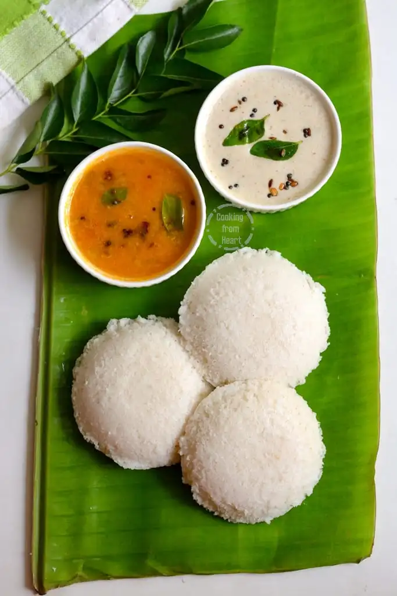
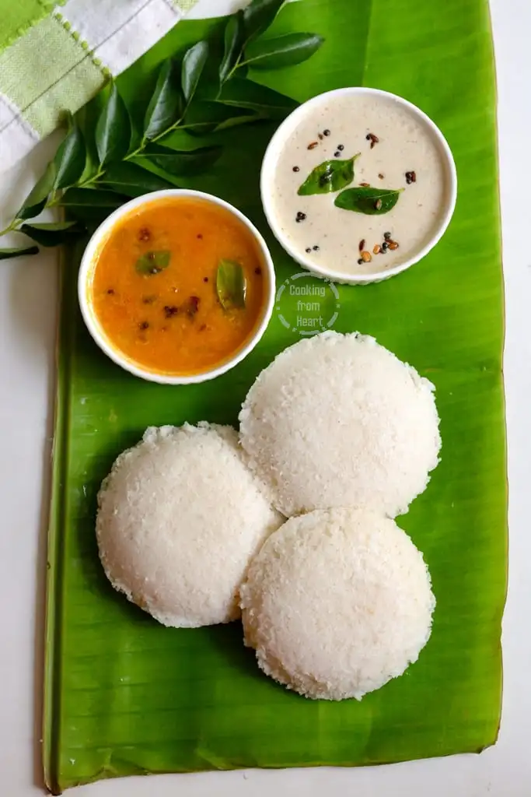

Idli or idly are a type of savoury rice cake, originating from the Indian
subcontinent, popular as breakfast foods in Southern India and in Sri Lanka. The cakes are made by steaming a batter
consisting of fermented black lentils (de-husked) and rice.
 
